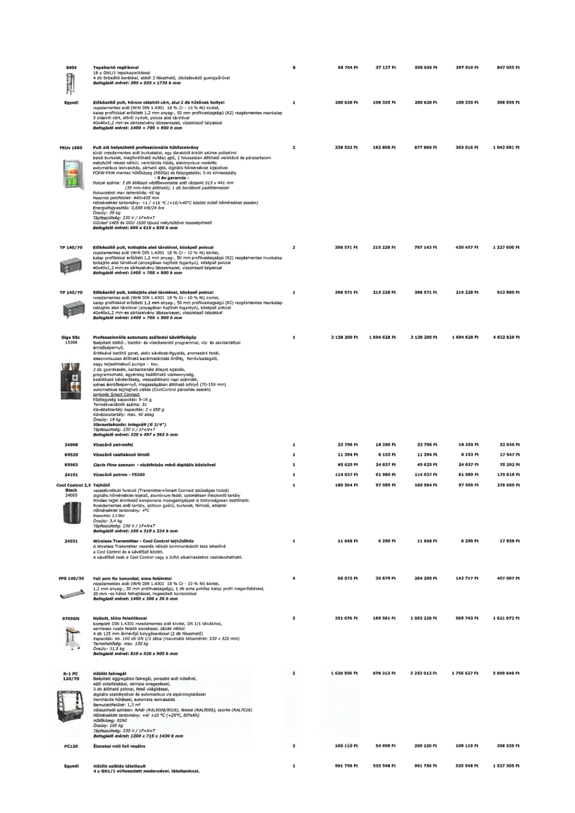

| Tétel | Menny. | Egys. | Anyag e.ár (net HUF) | Díj e.ár (net HUF) | Anyag összesen (net HUF) | Díj összesen (net HUF) | Anyag+Díj összesen (net HUF) |
|---|---|---|---|---|---|---|---|
| S404 Tepsitartó regálkocsi | 8 | NaN | 68 754 | 37 127 | 550 036 | 297 019 | 847 055 |
| Egyedi Előkészítő pult, három oldalról zárt, alul 2 db hűtőnek hellyel | 1 | NaN | 200 620 | 108 335 | 200 620 | 108 335 | 308 955 |
| FKUv 1660 Pult alá helyezhető professzionális hűtőszekrény | 2 | NaN | 338 533 | 182 808 | 677 066 | 365 616 | 1 042 681 |
| TP 140/70 Előkészítő pult, tolóajtós alsó tárolóval, középső polccal | 2 | NaN | 398 571 | 215 228 | 797 143 | 430 457 | 1 227 600 |
| TP 140/70 Előkészítő pult, tolóajtós alsó tárolóval, középső polccal | 1 | NaN | 398 571 | 215 228 | 398 571 | 215 228 | 613 800 |
| Giga X8c 15388 Professzionális automata szállodai kávéfőzőgép | 1 | NaN | 3 138 200 | 1 694 628 | 3 138 200 | 1 694 628 | 4 832 828 |
| 24098 Vízszűrő patronfej | 1 | NaN | 33 796 | 18 250 | 33 796 | 18 250 | 52 046 |
| 69539 Vízszűrő csatlakozó tömlő | 1 | NaN | 11 394 | 6 153 | 11 394 | 6 153 | 17 547 |
| 69563 Claris Flow szenzor - vízátfolyás mérő digitális kijelzővel | 1 | NaN | 45 625 | 24 637 | 45 625 | 24 637 | 70 262 |
| 24101 Vízszűrő patron - F5300 | 1 | NaN | 114 037 | 6 150 | 114 037 | 61 580 | 175 618 |
| Cool Control 2,5 Black 24065 Tejhűtő | 1 | NaN | 180 564 | 97 505 | 180 564 | 97 505 | 278 069 |
| 24031 Wireless Transmitter - Cool Control tejhűtőhöz | 1 | NaN | 11 648 | 6 290 | 11 648 | 6 290 | 17 938 |
| FPS 140/30 Fali polc fix konzollal, sima felülettel | 4 | NaN | 66 073 | 35 679 | 264 290 | 142 717 | 407 007 |
| 970SGN Nyitott, tálca feladókocsi | 3 | NaN | 351 076 | 189 581 | 1 053 228 | 568 743 | 1 621 972 |
| R-1 PC 120/70 Hűtött faliregál | 2 | NaN | 1 626 506 | 878 313 | 3 253 013 | 1 756 627 | 5 009 640 |
| PC120 Éjszakai roló fali regálra | 2 | NaN | 100 110 | 54 059 | 200 220 | 108 119 | 308 339 |
| Egyedi Hűtött salátás tálalópult 4 x GN1/1 süllyesztett medencével, tálalópolccal | 1 | NaN | 991 756 | 535 548 | 991 756 | 535 548 | 1 527 305 |
